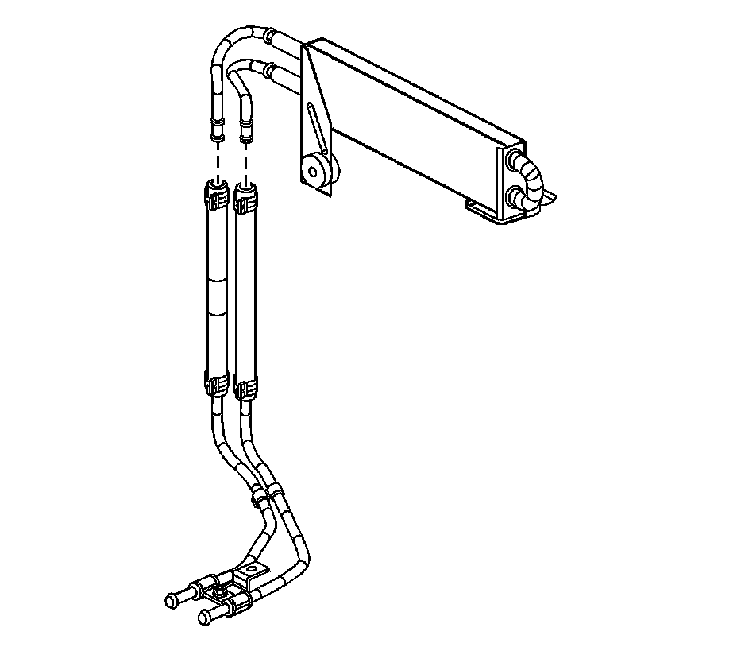
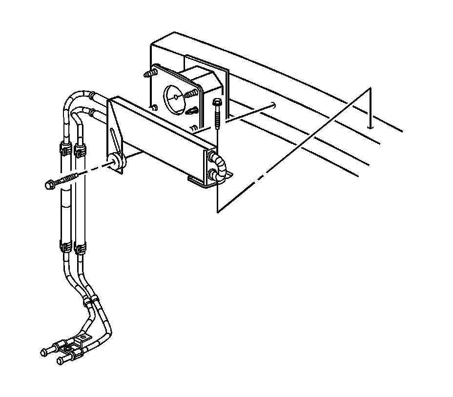

Power Steering Fluid Cooler Replacement (With V92)
Power Steering Fluid Cooler Replacement (With V92)
Removal Procedure
1. Remove the radiator upper grille. Refer to Radiator Upper Grille Replacement (Base) (Service and Repair)Radiator Upper Grille Replacement (R1T, R1X) (Service and Repair) .
2. Remove the front air deflector, if necessary. Refer to Front Air Deflector Replacement (Service and Repair) .
3. Place drain pans under the vehicle as needed.

4. Disconnect the power steering cooler inlet/outlet hose assembly from the power steering fluid cooler.

5. Remove the power steering fluid cooler bolts.
6. Remove the power steering fluid cooler from the vehicle.
Installation Procedure
1. Install the power steering fluid cooler to the vehicle.
Notice: Refer to Fastener Notice (Fastener Notice) .
2. Install the power steering fluid cooler bolts.
Tighten the bolts to 9 N.m (80 lb in).
3. Connect the power steering cooler inlet/outlet hose assembly to the power steering fluid cooler.
4. Clean any excess power steering fluid from the vehicle and remove the drain pans.
5. Install the radiator upper grille. Refer to Radiator Upper Grille Replacement (Base) (Service and Repair)Radiator Upper Grille Replacement (R1T, R1X) (Service and Repair) .
6. Install the front air deflector, if necessary. Refer to Front Air Deflector Replacement (Service and Repair) .
7. Fill and bleed the power steering system. Refer to Power Steering System Bleeding (Service and Repair) .